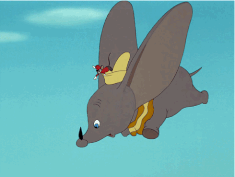

A ERA DE OURO: (1937 - 1942)
|
Esse foi o momento em que a Disney passou de animações curtas para mais extensas, de uma a duas horas de duração. Em 1937 foi lançado nos cinemas Branca de Neve e os Sete Anões, longa que se tornou um sucesso de crítica e bilheteria.
 O período foi um dos ápices do estúdio que produziu outras obras baseadas em contos de fadas recheado de canções, danças e inovação tecnológica para a época. Além da história da primeira princesa da Disney, Pinóquio e Fantasia (ambos de 1940), Dumbo (1941) e Bambi (1942) se tornaram outros clássicos atemporais da animação. |